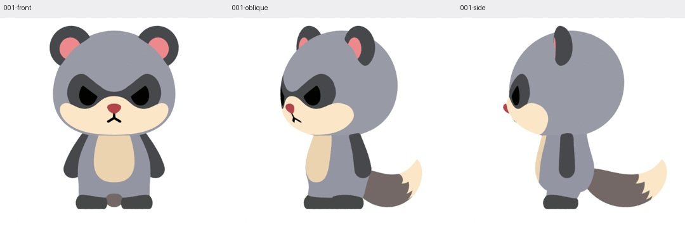
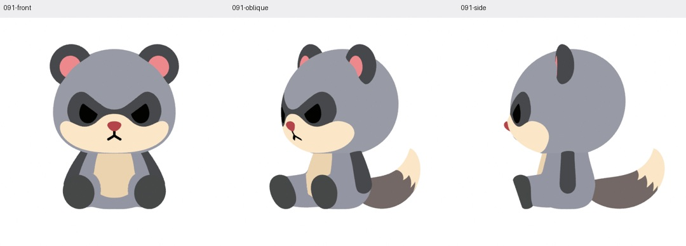

Mozu · sit & eat · authored arm study F
Sit down.
Enjoy three bites.
The shoulder places the arm, a broad elbow bend carries the reach, and the original hand keeps its round shape. Relaxed seated arms return to the same shape as standing.
1 / 879
Standing → anticipation
Three synchronized views · 879 actual native frames · 60fps · 14.65 seconds · all three bites. The original eating animation takes over at frame178.
Authored from the meaning of five reference clips, without image-coordinate fitting or an automatic pose search. This is a review candidate; the standing arm’s existing body overlap and the later food/head contact issues remain documented.
Open the full video directly: Front · Oblique · Side
Same arm, different posture

Standing · original arm shape
Seated rest · the same shape, translated with the shoulderInspect the arm from seven directions and in shaded views
Reference actions and interpretation
The sit clips share a temporary balancing reach followed by release. Their final hand positions differ because the videos are separate generated performances. The eating clips show quiet hand support while the head approaches the food.
Every captured frame
Editable native rig
Shoulder swing, elbow bend, wrist bend and hand roll remain live Geometry Nodes controls. The native file was saved, reopened, edited and restored with exact vertex agreement. Its complete 879-frame action remains playable; the videos above now show the complete action through the third bite and final recovery. The original r12 and previous E7 remain preserved.
Complete Blender native retained on Windows, as requested. File: mozu-siteat212-authored-arms-f-full.blend